pandas俩个数据结构 Series & DataFrame
下载
pip install jupyterSeries表示一维数据 DataFrame表示二维数据 pandas没有三维以上的数据结构
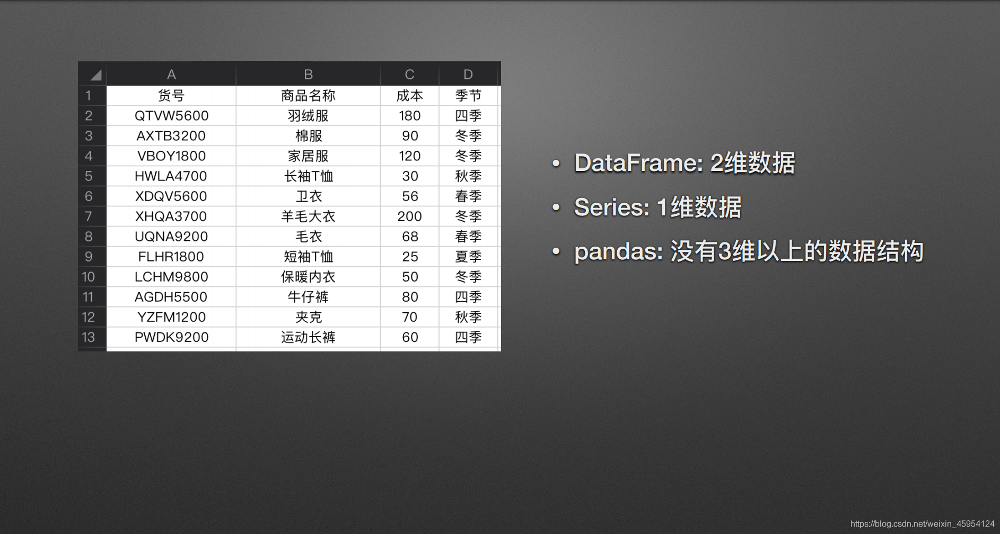赋值
Series
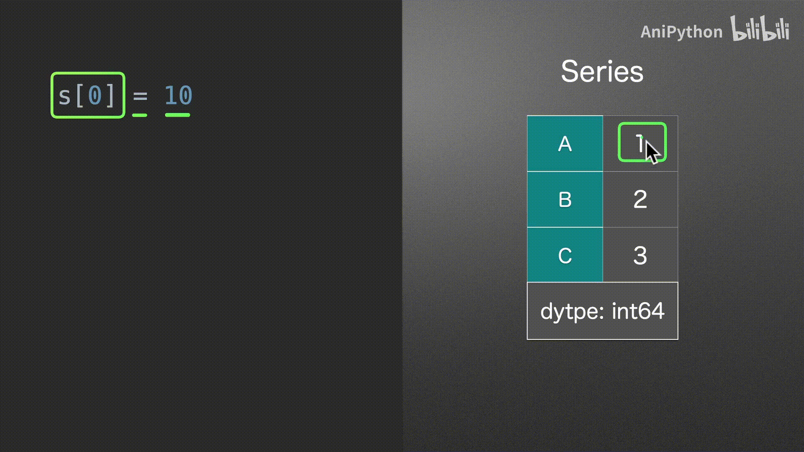 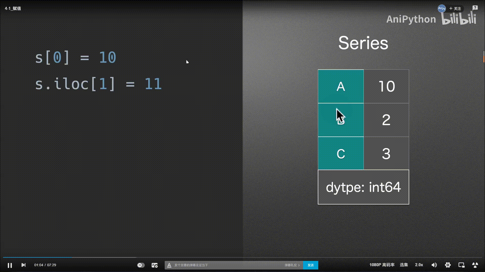 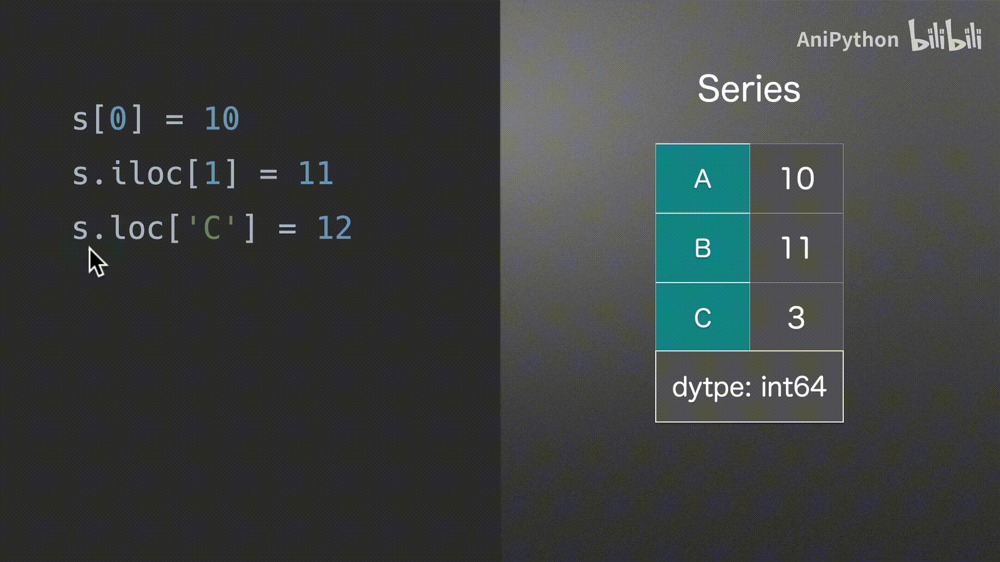 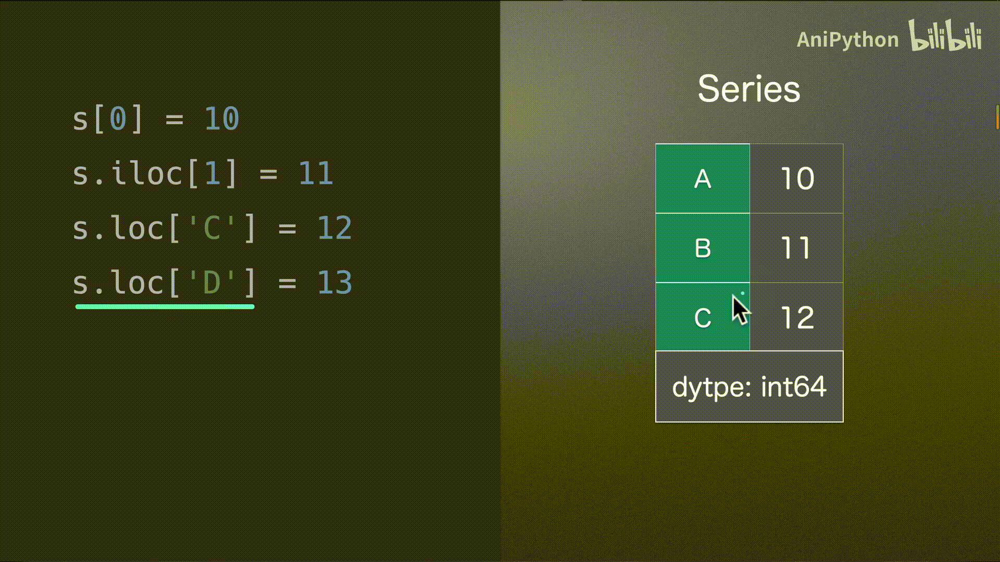 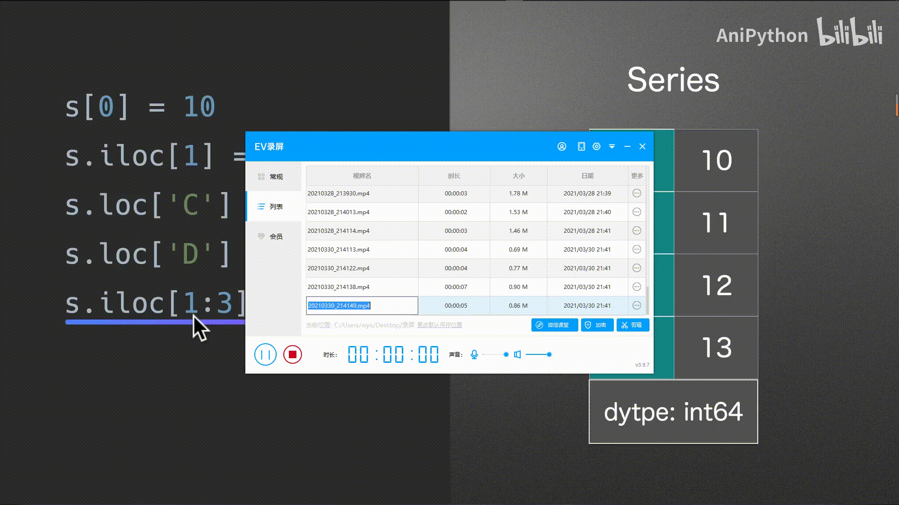 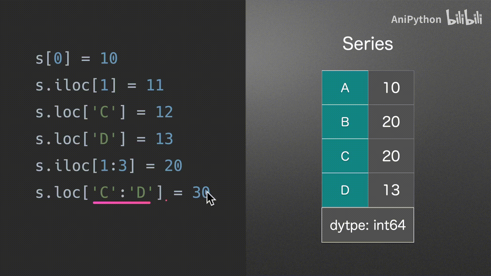 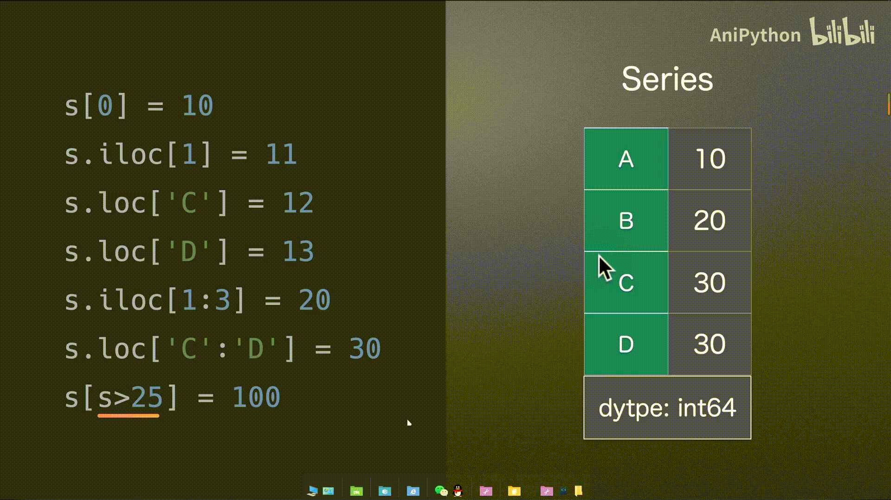DataFrame
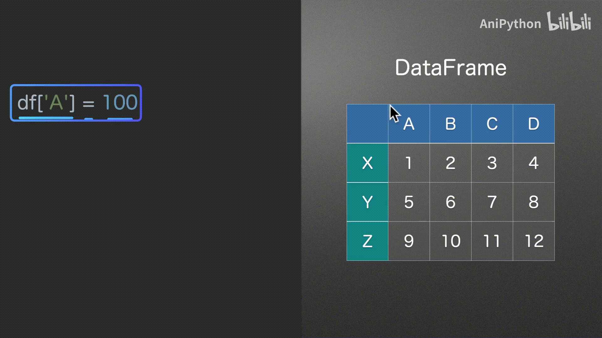 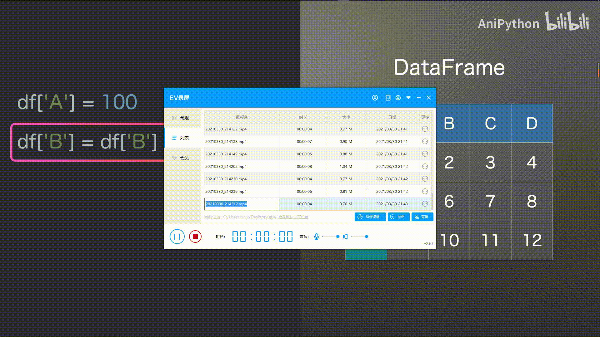 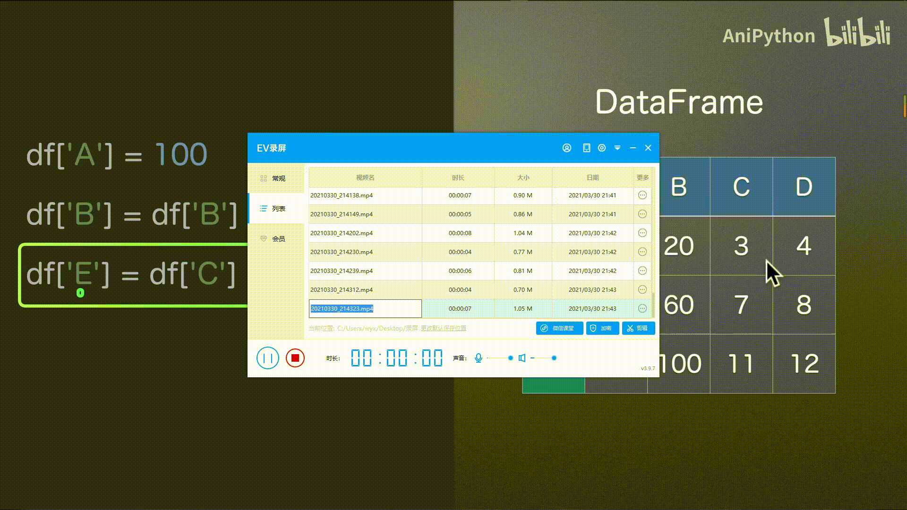 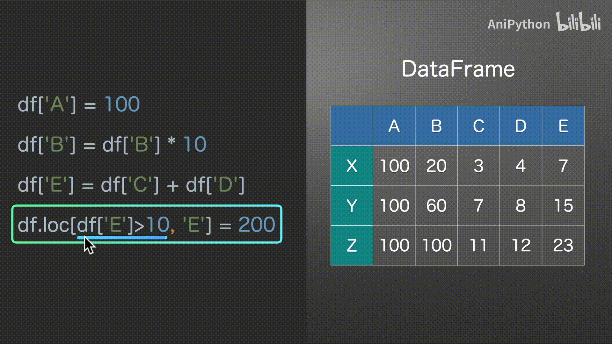 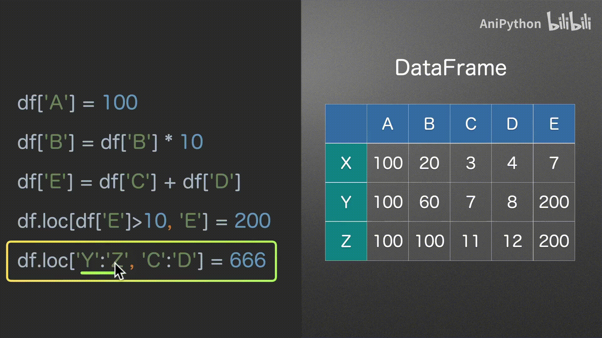取值
dict-like(字典的方式)
可以像dict一样取值
通过[True, Flase] 掩码 可以是列表、Series、numpy数组都可以 只要是由True和Flase构成的
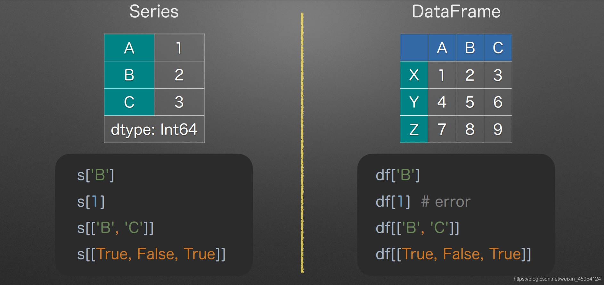#%%
import pandas as pd
#%%
# 创建Series
s = pd.Series(
{'A': 1, 'B': 2, 'C': 3}
)
s
#%%
# 创建DataFrame
df = pd.DataFrame({
'A': [1, 4, 7],
'B': [2, 5, 8],
'C': [3, 6, 9],
}, index=list('XYZ'))
df
#%%
df.to_numpy().sum()
#%%
# 取出 C
s['C']
#%%
# 使用get也可以 取不到赋值为888
s.get('D', 888)#%%
# 取到B列 2 5 8
df['B']
#%%
# 取到 3
s[2]
#%%
# 这里和Series是不一样的 除非索引为 int类型2也就是数字2
# df[2] error
#%%
# 传入列表 注意格式 取到 2 3
s[['B', 'C']]
#%%
# 注意格式 ["B"]取出Series [["B"]]取出DataFrame
df[['B']]
#%%
# 传入掩码的方法 取出1 3
s[[True, False, True]]
#%%
# 按照行输出 取出 1 2 3 7 8 9 必须和行数一一对应 否则出错
df[[True, False, True]]
#%%
# 根据条件生成一个掩码 判断>1的 返回True或False
mask = s > 1
mask
#%%
# 或者s[mask]也可以 直接放条件亦可以
s[s > 1]#%%
# B列 > 2的为True反之False
df['B'] > 2
#%%
# 根据条件返回的掩码进行取值
df[df['B'] > 2]
#%%
# 逻辑运算符 and & 注意格式 需要()
df[(df['B'] > 2) & (df['B'] < 6)]
#%%
# 逻辑运算符 or |
df[(df['B'] == 2) | (df['B'] == 8)]
#%%
# 逻辑运算符 not ~
df[~(df['B'] == 2)]
list-like(字典的方式)
注意：
- DataFrame切片是按照行来切片的
- DataFrame切片数字[0:2] 只包括头 不包括尾
- DataFrame切片标签[“X”:”Y”] 包括头和尾
#%%
import pandas as pd
#%%
s = pd.Series(
{'A': 1, 'B': 2, 'C': 3}
)
s
#%%
df = pd.DataFrame({
'A': [1, 4, 7],
'B': [2, 5, 8],
'C': [3, 6, 9],
}, index=list('XYZ'))
df
#%%
# 取出 1 2 不包尾
s[0:2]
#%%
# 取出 1 2 不包尾
s[0:-1]
#%%
# 负数 取出 3 2 1
s[::-1]
#%%
# 步长2 取出 1 3
s[::2]#%%
# 取出 X Y行 不包尾
df[0:2]
#%%
# 取出 1 2
s['A':'B']
#%%
# 传入行标签取出 取出X Y行 ['X':] 取出全部
df['X':'Y']
.(点选)
不推荐使用
- 代码可读性不好
- 有可能与方法或属性冲突
#%%
import pandas as pd
#%%
s = pd.Series(
[1,2,3,4],
index=['total', '列',
'sum', 'dtype']
)
s
#%%
# 也可以取出1 但是代码可读性不高 不推荐使用
s.total
#%%
# 推荐这种
s['total']
#%%
# 中文也是可以的 取出2
s.列
#%%
# 这样取出优先调用方法
s.sum
#%%
# 这样就可以取出 3
s['sum']
#%%
# 优先调用方法
s.dtype
#%%
# 这样就可以取出
s['dtype']df = pd.DataFrame(
[[1,2,3,4],
[5,6,7,8]],
columns=['total', '列',
'sum', 'dtypes']
)
df
#%%
# 这样取没问题 但是我们会误以为是方法
df.total
#%%
# 也可以取出
df.列
#%%
# 和方法引起冲突
df.sum
#%%
# 调用了它的属性
df.dtypes
#%%
# 这样取出就没有问题
df['dtypes']
.loc
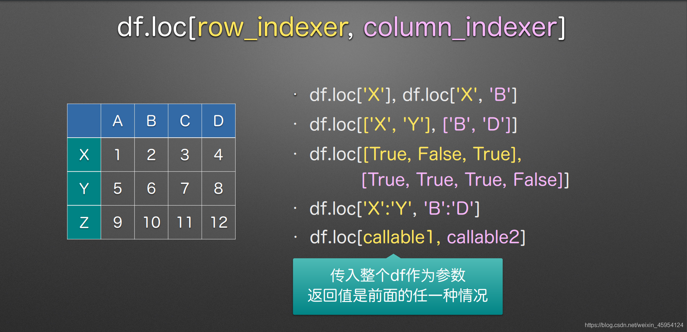#%%
import pandas as pd
#%%
df = pd.DataFrame([
[1, 2, 3, 4],
[5, 6, 7, 8],
[9, 10, 11, 12]],
columns=list('ABCD'),
index=list('XYZ'))
df
#%%
# 取出 Y列 DataFrame格式
df.loc['Y']
#%%
# 取出Y列 C行 标量
df.loc['Y', 'C']
#%%
# 传入列表 多行多列 X Y行 B D列
df.loc[['X', 'Y'], ['B', 'D']]
#%%
# 使用切片 列从Y到Z 行从B到D 还可以混合使用['Y':'Z', 'B','D']
df.loc['Y':'Z', 'B':'D']

#%%
# 这样就是选中全部的行
df.loc[:, 'B':'D']
#%%
# 选中全部列 倒序输出
df.loc[:, ::-1]
#%%
# 给定步长 XZ AC
df.loc[::2, ::2]
#%%
# 传入mask True被选中 False反之
df.loc[[True, False, True],
[True, False, True, False]]
#%%
# 传入一个函数 上面是行 下面是列
df.loc[lambda df: [True, False, True],
lambda df: [True, False, True, False]]
#%%
# 读取三列['total_bill','day','time']
df = pd.read_csv(
'tips.csv',
usecols=['total_bill','day','time']
)
df
#%%
# groupby分组 求和
df.groupby(['day','time']).sum()
#%%
# 这样不行 df找不到
# df.groupby(['day','time']).sum()[
# df[df['total_bill']>100]
# ]
#%%
# 这样就可以了 groupby分组 求和传入df 链式调用 > 100的
df.groupby(['day','time']).sum().loc[
lambda df: df['total_bill']>100
]
#%%
# 这样也是可以的
df = df.groupby(['day','time']).sum()
df = df[df['total_bill']>100]
df
#%%
df.loc['X', 'B'] == df.at['X', 'B']
df.loc[1, 2] == df.iat[1, 2].iloc
注意原来是标签 现在是整数

#%%
import pandas as pd
#%%
df = pd.DataFrame([
[1, 2, 3, 4],
[5, 6, 7, 8],
[9, 10, 11, 12]],
columns=list('ABCD'),
index=list('XYZ'))
df
#%%
# 选择第0行 1234
df.iloc[0]
#%%
# 选择第0行 第1列 2
df.iloc[0, 1]
#%%
# 选择第0 1行 第1 3列 取出DataFrame
df.iloc[[0, 1], [1, 3]]
#%%
# 传入掩码 和loc结果一样
df.iloc[[True, False, True],
[True, True, False, False]]#%%
df.loc[[True, False, True],
[True, True, False, False]]
#%%
# 切片的方式 不包括列2 不包括行3
df.iloc[0:2, 1:3]
#%%
# 跟切片的结果是一样的 和loc几乎是一样的
df.iloc[lambda df: [0, 1],
lambda df: [1, 3]]
#%%
df.iloc[0, 1]
#%%
df.iat[0, 1]
#%%
df.loc['X', 'B']
#%%
df.loc['X':'Y', 'B':'D']
#%%
df.at['X':'Y', 'B':'D']使用 .at 和 .iat的时候是不能切片的 运行效率会高一点点
#%%
# 选取单个值的时候 使用iat
df.iat[0, 1]
#%%
df.loc['X', 'B']
#%%
df.loc['X':'Y', 'B':'D']
#%%
# 不能切片
df.at['X':'Y', 'B':'D']Series
Series (opens new window)是带标签的一维数组，可存储整数、浮点数、字符串、Python 对象等类型的数据。轴标签统称为索引。调用 pd.Series 函数即可创建 Series：
创建一个Series对象
#%%
import pandas as pd
#%%
s = pd.Series([1, 2, 3])
s
#%%
s = pd.Series([1, 2, 3],
index=list('abc'),
dtype='int64',
name='num')
s
#%%
d = {'a': 1, 'b': 2, 'c': 3}
s = pd.Series(d)
s
#%%
s = pd.Series(3.0, index=['a', 'b', 'c'])
sAccessor 访问器
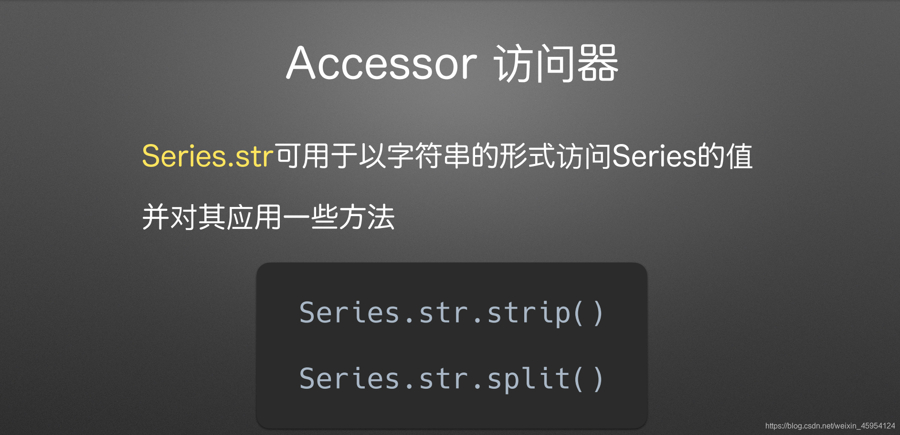#%%
import pandas as pd
from datetime import datetime
#%%
df = pd.DataFrame([
['\na\n', '\nd\n', datetime(2020, 1, 1)],
['\nb\n', 1, datetime(2020, 1, 2)]
], columns=list('ABC'))
df
#%%
# 查看类型
df.dtypes
#%%
# 使用字符串方法取出空格
df['A'].str.strip()
#%%
# 发现 1 变为空值了
df['B'].str.strip()
#%%
# 发现 抛出属性异常的错误
# df['C'].str.strip()
#%%
# 转换类型 发现没有问题了 1 变为str类型了
df['B'].astype('str').str.strip()
#%%
# 转换类型 不是时间格式了 进行切分
df['C'].astype('str').str.split('-')
#%% 不使用convert_dtypes转换为最有可能的数据类型
# 读取Excel文件 sheet_name=0 有问题的文件 sheet_name=1 手动更改的文件
df = pd.read_excel(
'Series_str.xlsx',
sheet_name=1
).convert_dtypes()
df
#%%
# 查看类型 不使用convert_dtypes 都是object类型
df.dtypes
#%%
# 取 2行 0列
df.iloc[2, 0]
#%%
# 重新复制 去除空格
df['货号'] = df['货号'].str.strip()
#%%
# 取出 去除空格
df.iloc[2, 0]
#%%DataFrame
创建Dataframe对象
- 通过二维的list-like创建
- 通过字典创建
- 通过读取Excel表
#%%
import pandas as pd
#%%
# 通过二维的列表
list_2d = [[1, 2],
[3, 4]]
#%%
df = pd.DataFrame(list_2d)
df
#%%
# 可以设置他的columns（列索引）和index（行索引）
df = pd.DataFrame(list_2d,
columns=['A', 'B'],
index=['x', 'y'])
df
#%%
# 通过字典创建 指定x y为行索引
d = {'A': [1, 3], 'B': [2, 4]}
df = pd.DataFrame(d, index=['x', 'y'])
df通过读取Excel文件
#%%
import pandas as pd
#%%
df = pd.read_excel('goods_base.xlsx',
index_col=0)
df.columns.name = 'col_name'
df.index.name = 'index_name'
df
read_excel
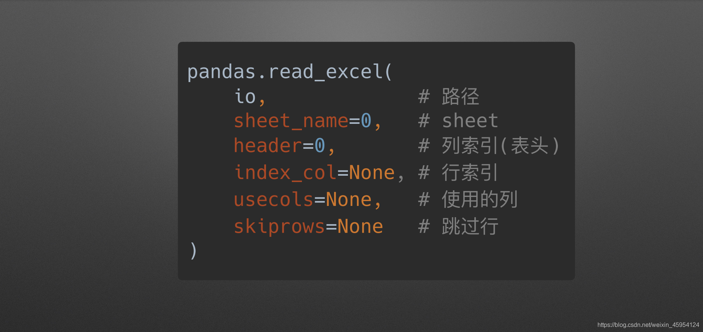 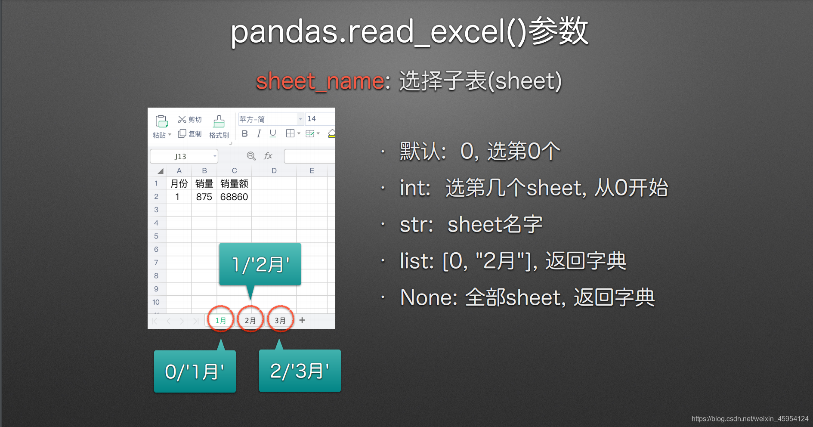普通读取
#%%
import pandas as pd
#%%
pd.read_excel('goods_base.xlsx')sheet_name
(按照sheet名)
#%%
# 读取所有
df_dict = pd.read_excel('sheet_name.xlsx',
sheet_name=None)
# 返回一个DataFrame
df_dict
#%%
# 取出3月的
df_dict['3月']#%% sheet_name
# 指定下标 初始值 0
pd.read_excel('sheet_name.xlsx',
sheet_name=2)
#%%
# 指定名字
pd.read_excel('sheet_name.xlsx',
sheet_name='3月')
#%%
# 读取多个sheet 传入列表 返回一个DataFrame
df_dict = pd.read_excel('sheet_name.xlsx',
sheet_name=[1, '3月'])
df_dict[1]
#%%
df_dict['3月']header & index_col
(指定列索引的行&行索引的列)
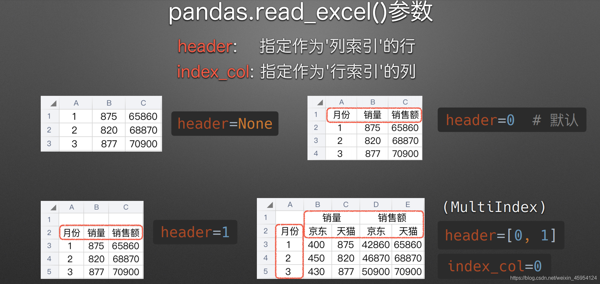#%% header
# 指定为空 默认会让第一行为索引
pd.read_excel('header.xlsx', header=None)
#%%
# 不指定第一行默认为索引
pd.read_excel('header.xlsx',
sheet_name=1)
#%%
# 指定第一行为索引
pd.read_excel('header.xlsx',
sheet_name=2,
header=1)#%%
# 指定列索引（header） 和 行索引（index_col）
pd.read_excel('header.xlsx',
sheet_name=3,
header=[0, 1],
index_col=0)注意坑 传入列表会有问题 很费解
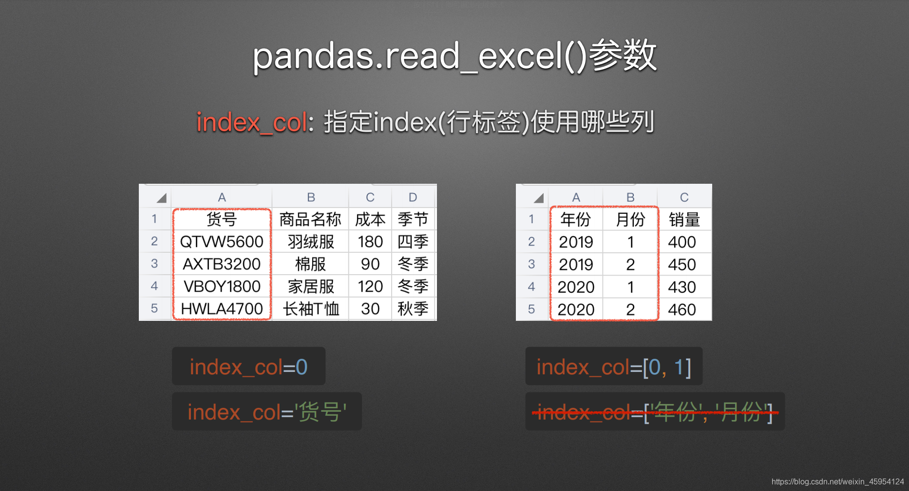usecols
(指定哪些列)
小技巧：
复制Excel所有列名 打开python 输入 加上单引号 .splite进行切分 ok了
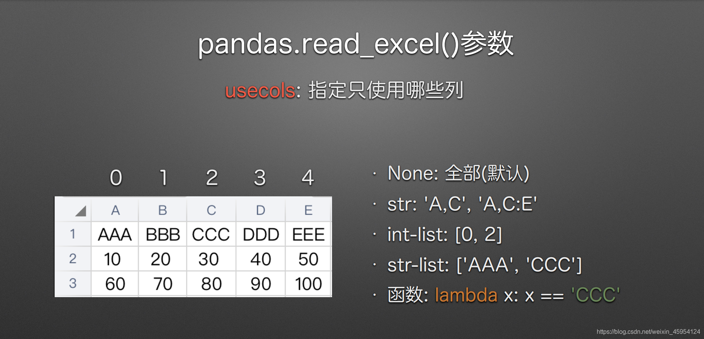#%% usecols
# 默认选择所有
pd.read_excel('usecols.xlsx')
#%%
# 切片操作 B到E
pd.read_excel('usecols.xlsx',
usecols='B:E')
#%%
# int列表选择列 0 2 下标从0开始
pd.read_excel('usecols.xlsx',
usecols=[0, 2])
#%%
# 字符串列表 传入列名
pd.read_excel('usecols.xlsx',
usecols=['AAA', 'CCC'])str
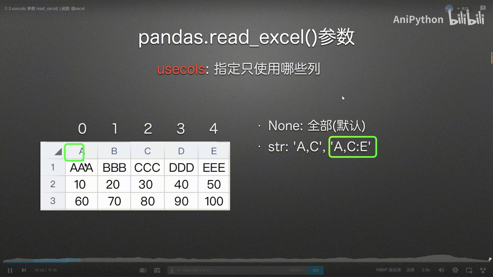int-list
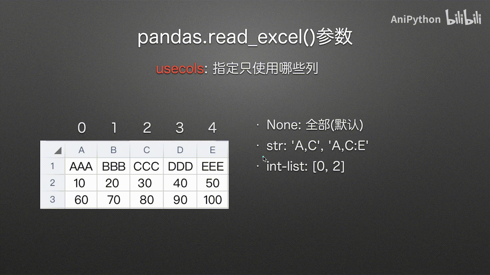str-list（建议使用）
可读性高 使用方便
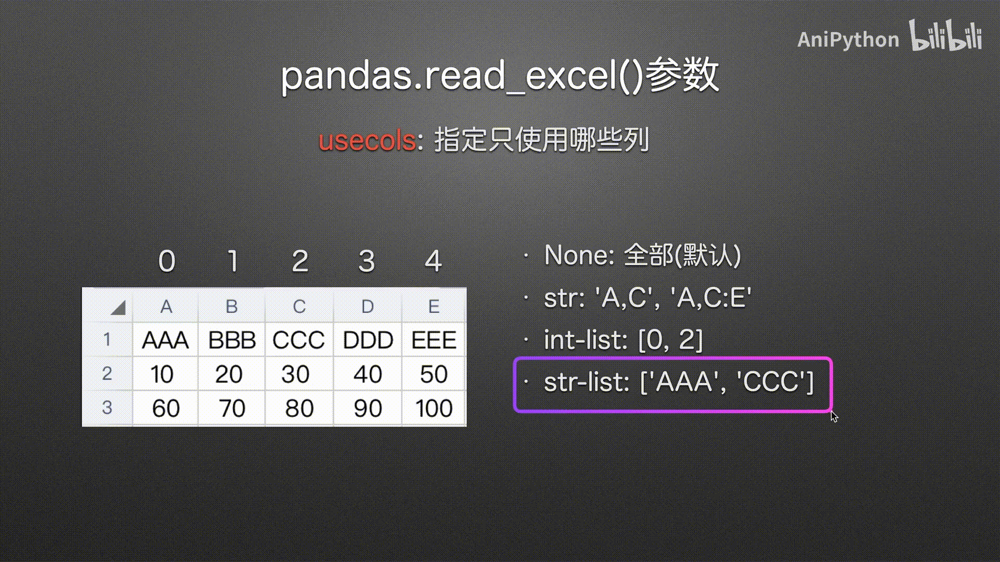#%% ['货号', '商品名称', '品牌', '成本', '季节', '商品年份']
pd.read_excel('goods_base.xlsx',
usecols=['货号', '商品名称', '品牌',
'成本', '季节', '商品年份'])函数
#%%
pd.read_excel('usecols.xlsx',
usecols=lambda x: (x=='AAA') | (x=='EEE'))skiprows&skipcols
(跳过行&跳过列)
#%% skiprows
# 跳过一行
pd.read_excel('skiprows.xlsx',
skiprows=1)
#%%
# 跳过第一行和第三行 也就是索引 0,2
pd.read_excel('skiprows.xlsx',
sheet_name=1,
skiprows=[0, 2])
#%%
# 跳过俩行skiprows 跳过一列skipcols
pd.read_excel('skiprows.xlsx',
sheet_name=2,
skiprows=2,
skipcols=1)
#%%
# 结果同上 因为skipcols还未正式使用
pd.read_excel('skiprows.xlsx',
sheet_name=2,
skiprows=2,
usecols='B:D')
names
(读取时指定显示列名)
#%%
import pandas as pd
#%%
df = pd.read_excel('header.xlsx')
df
#%%
# 不使用header=None 覆盖了一月份的数据
df = pd.read_excel(
'header.xlsx',
names=['月份', '销量', '销售额'])
df
#%%
# 使用header=None 就不会缺失数据了
df = pd.read_excel(
'header.xlsx',
names=['月份', '销量', '销售额'],
header=None)
dfdtype
(指定类型)
一般默认的类型：
int64、float64、bool、datetime64、object
#%%
import pandas as pd
#%%
df = pd.read_excel(
'goods_base.xlsx'
)
df
#%%
df.dtypes
#%%
# 修改类型 传入字典 不能将int64直接转换为string 好像是个小bug
df = pd.read_excel(
'goods_base.xlsx',
dtype={
'货号': 'str',
'商品代码': 'string',
'颜色代码': 'str',
'季节': 'category',
'品牌': 'category',
'商品年份': 'period[Y]'
}
)
# 还可以使用astype来转换
df['颜色代码'] = df['颜色代码'].astype('string')
df.dtypes
parse_dates & data_parser
(指定解析成日期格式的列 & 是个函数指定如何去解析这些列)
parse_dates 下载

#%%
import pandas as pd
#%%
df = pd.read_excel(
'parse_dates.xlsx',
index_col=2
)
df
#%%
# 是object类型
df.index
#%%
# 我们指定转换日期类型 parse_dates会自动识别
df = pd.read_excel(
'parse_dates.xlsx',
index_col=2,
parse_dates=True
)
df.indexdf = pd.read_excel(
'parse_dates.xlsx'
)
df.dtypes
#%%
df = pd.read_excel(
'parse_dates.xlsx',
parse_dates=[0, 1, 2, 3, 4, 5, 6]
)
df.dtypes
#%%
df = pd.read_excel(
'parse_dates.xlsx',
sheet_name=1,
)
df
#%%
# 传入列表 指定拼接日期格式
df = pd.read_excel(
'parse_dates.xlsx',
sheet_name=1,
# parse_dates=[[0, 1, 2]],
parse_dates=[['年', '月', '日']],
df.dtypes
#%%
# 传入字典 指定列名和日期
df = pd.read_excel(
'parse_dates.xlsx',
sheet_name=1,
parse_dates={'日期': ['年', '月', '日']},
)
df
#%%
df.dtypesdata_parser(配合parse_dates使用)
传入一个函数 下载
#%%
import pandas as pd
#%%
df = pd.read_excel(
'date_parser.xlsx'
)
df
#%%
df.dtypes
#%%
# 先指定列名parse_dates 否则会出错 只有parse_dates解析不成功是object类型
# date_parser是一个函数 使用to_datetime x是一个Series类型 正确解析为datetime64类型
df = pd.read_excel(
'date_parser.xlsx',
parse_dates=[0],
date_parser=lambda x: pd.to_datetime(
x, format='%Y年%m月%d日'
)
)
df.dtypes
#%%
df
na_values
(替换NaN)
NaN是一个float类型 下载
#N/A #NA默认解析为NaN
#%%
import pandas as pd
#%%
# 什么都没有是NaN 有空格也不行 注意踩坑
df = pd.read_excel(
'na_values.xlsx'
)
df
#%%
# na_values 指定为NaN
df = pd.read_excel(
'na_values.xlsx',
na_values=['a', 0, ' ']
)
df
#%%
# 还可以传入字典 指定替换列1=一的
df = pd.read_excel(
'na_values.xlsx',
na_values={'列1': ['a', 0, ' ']}
)
df
converters
(转换器)
#%%
import pandas as pd
#%%
df = pd.read_excel(
'converters.xlsx'
)
df
#%%
# 传入字典去掉换行符 空格
df = pd.read_excel(
'converters.xlsx',
converters={
# '货号': lambda x: x.strip(),
'货号': str.strip
}
)
dftrue_values & false_values
(传入列表视为True & 同理)
#%%
import pandas as pd
#%%
df = pd.read_excel(
'true_false_values.xlsx'
)
df
#%%
# 只有一列全部装换为bool类型才会进行转换
df = pd.read_excel(
'true_false_values.xlsx',
true_values=['a', 'b'],
false_values=['c', 'd'],
)
df
#%%
# 这时发现只有列1 才是bool类型
df.dtypes
#%%
# 只对字符串生效 对int无效
df = pd.read_excel(
'true_false_values.xlsx',
true_values=['a', 'b', 1, 2],
false_values=['c', 'd', 0],
)
df
# 如果对int类型进行强转的话 使用dtype 传入列名 这一列都会被转换 0会变为False 非0转换为True
df = pd.read_excel(
'true_false_values.xlsx',
true_values=['a', 'b'],
false_values=['c', 'd'],
dtype={'列3': bool}
)
df
#%%
df = pd.read_excel(
'true_false_values.xlsx',
encoding='GBK'
)
df

squeeze
(默认返回DataFrame传入True返回Series)
mangle_dupe_cols
(是否重命名重复列名)
true_values & false_values()
nrows
(要解析的行数)
nrows=2 是不包括表头的 如果包括就是3
thousands()
类型：str 默认None
作用：将字符串列解析为数字
convert_float
(在可能的情况下,是否将float转换为int(即1.0 ->1))
to_excel
(写Excel文件)
index
(是否输出行索引)
import pandas as pd
df = pd.DataFrame({
'销量': [10, 20],
'售价': [100.123, None],
}, index=['aaa', 'bbb'])
df.index.name = '货号'
print(df)
# sheet_name表名 float_format保留俩位小数 na_rep替换空值
# df.to_excel('tb_.xlsx',
# sheet_name='tb1',
# float_format='%.2f',
# na_rep='我是空值')
df.to_excel('tb__.xlsx', index=False)
"""
销量 售价
货号
aaa 10 100.123
bbb 20 NaN
"""ExcelWriter
(可以输出多可sheet)
import pandas as pd
from datetime import datetime
df1 = pd.DataFrame(
{'日期': [datetime(2020, 1, 1), datetime(2020, 1, 2)],
'销量': [10, 20]}
)
df2 = pd.DataFrame(
{'日期': [datetime(2020, 2, 1), datetime(2020, 2, 2)],
'销量': [15, 25]}
)
print(df1)
print(df2)
# datetime_format 不指定会输出 年-月-日-时-分-秒
with pd.ExcelWriter('tb.xlsx',
datetime_format='YYYY-MM-DD'
) as writer:
df1.to_excel(writer, sheet_name='1月')
df2.to_excel(writer, sheet_name='2月')
"""
日期 销量
0 2020-01-01 10
1 2020-01-02 20
日期 销量
0 2020-02-01 15
1 2020-02-02 25
"""read_csv & to_csv
import pandas as pd
df = pd.DataFrame(
{
'一': [1, 2],
'二': [3, 4],
}
)
print(df)
# index 不设置就不是一个标准的csv文件 encoding指定编码格式
# sep 设置分隔符 一般不设置
df.to_csv('tb1.csv', index=False, encoding='GBK')
df = pd.read_csv('tb1.csv', encoding='GBK')
print(df)
"""
一 二
0 1 3
1 2 4
一 二
0 1 3
1 2 4
"""index
识别
对齐
获取和设置
标签索引可以被改变 位置索引不可更改 默认0 1 2
避免这俩中情况


- Post link: https://yanxiang.wang/pandas%E8%BF%9B%E9%98%B6/
- Copyright Notice: All articles in this blog are licensed under unless otherwise stated.